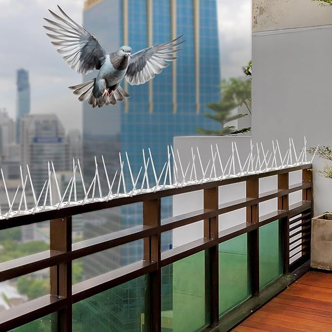
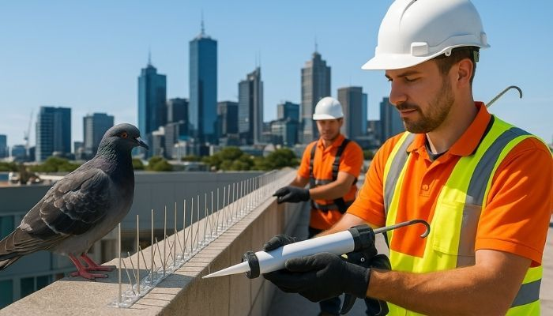
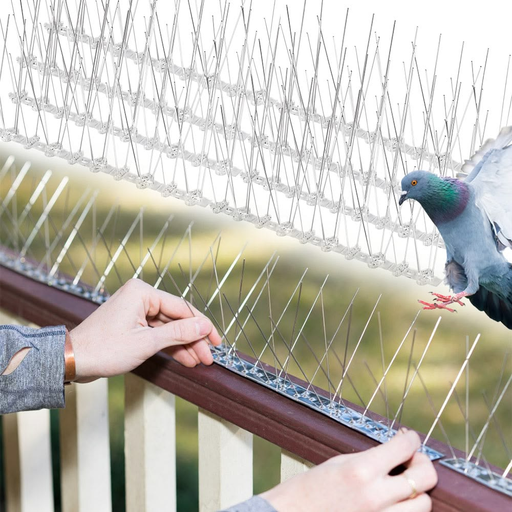
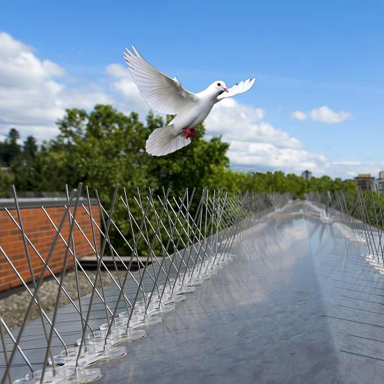
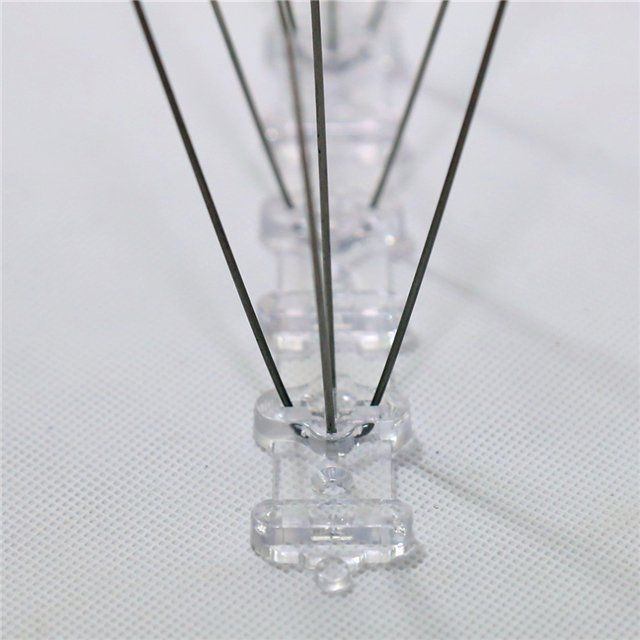

In Electronic City Phase 2, pigeons commonly return to convenient landing surfaces such as parapets, balcony edges, window ledges, and AC outdoor-unit areas. Simon Pigeon Spikes and Nets provides practical bird deterrence based on the actual site conditions.
Our Bird Spikes in Electronic City Phase 2 are positioned on suitable landing surfaces after considering the available width, shape, fixing points, and surrounding finish. The aim is to discourage repeated landing while keeping the installation neat.
Where an open area requires full coverage, Pigeon Nets in Electronic City Phase 2 can be considered for balconies, windows, ducts, shafts, and similar spaces. The protection method is selected according to the structure and required coverage.
We pay attention to measurement, fixing strength, alignment, and finishing when installing Bird Protection Spikes in Electronic City Phase 2. The service can suit apartments, villas, independent homes, offices, and other buildings.
People searching for Pigeon Spikes Near Me in Electronic City Phase 2, Bird Spikes Near Electronic City Phase 2, or Pigeon Nets in Electronic City Phase 2 can contact Simon Pigeon Spikes and Nets for an assessment of the affected area and installation requirements.
Simon Pigeon Spikes and Nets provides Pigeon Spikes & Nets in Electronic City Phase 2 for balconies, windows, ledges, ducts, shafts, and other places where pigeons repeatedly gather. The affected surfaces are checked before the protection method is selected.
For properties in Electronic City Phase 2, bird droppings, feathers, and nesting debris can become a recurring cleaning issue. Bird Spikes and Pigeon Nets are planned to help discourage landing and nesting while maintaining a clean-looking installation.
Our Pigeon Spike & Net Installation in Electronic City Phase 2 begins with identifying common landing and entry points. Suitable spikes or nets are then fitted according to the surface and the area that needs protection.
Simon Pigeon Spikes and Nets supplies bird protection for balconies, window ledges, ducts, and open spaces in Electronic City Phase 2. Pigeon Spikes and Nets are selected according to the location and installed with attention to coverage and finish.

Professional Pigeon Spikes & Nets in Electronic City Phase 2 can be used across balconies, windows, ledges, ducts, and other exposed areas where unwanted pigeon activity is a concern.


For Electronic City Phase 2 homes, our Pigeon Spikes & Nets service covers common pigeon-prone locations including balconies, windows, ledges, ducts, and shafts. We assess the affected area before planning the installation.
Pigeon Spikes in Electronic City Phase 2 can suit exposed landing surfaces such as parapets, ledges, and AC outdoor-unit areas. Pigeon Nets can provide broader protection for balconies, windows, ducts, and other open sections.
At Simon Pigeon Spikes and Nets, we consider measurements, fixing points, placement, and finishing for properties in Electronic City Phase 2. The objective is to reduce repeated pigeon landing and nesting around frequently affected areas.

Projects Completed
Customer Satisfaction
Professional Services
Support Available
From apartment balconies and window ledges to ducts and open utility areas in Electronic City Phase 2, we provide bird protection solutions with planned placement, secure fixing, and a neat installation finish.




Simon Pigeon Spikes and Nets provides Bird & Pigeon Protection Solutions in Electronic City Phase 2 for balconies, windows, ledges, ducts, shafts, and other areas affected by regular pigeon activity. The location is assessed before selecting spikes, nets, or a combination.
If you are looking for Pigeon Spikes Near Me in Electronic City Phase 2, Pigeon Nets Near Electronic City Phase 2, or a complete Bird Protection Solution in Electronic City Phase 2, our team can review the required coverage and plan the installation around your property.
Pigeon droppings, feathers, and nesting materials can make frequently affected areas difficult to maintain. Our bird protection installations are planned to help reduce repeated landing and nesting while keeping the installation neat and appropriate for the property's structure.
If you are looking for Pigeon Spikes Near Me in Electronic City Phase 2, Pigeon Nets Near Electronic City Phase 2, or a complete Bird Protection Solution in Electronic City Phase 2, our team can inspect the affected area, determine the required coverage, and plan the installation according to the property's specific requirements.